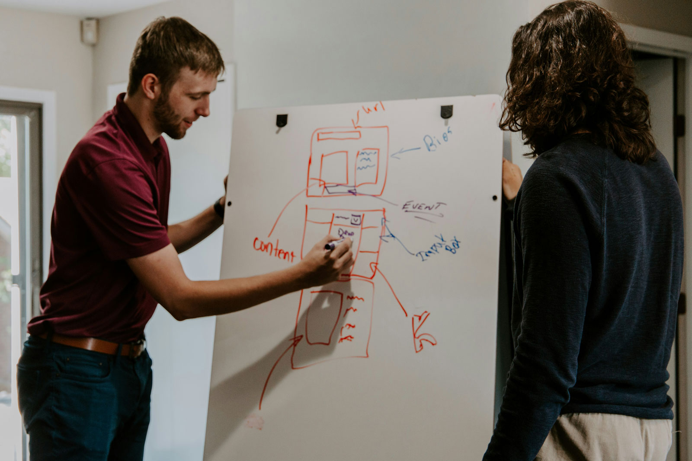
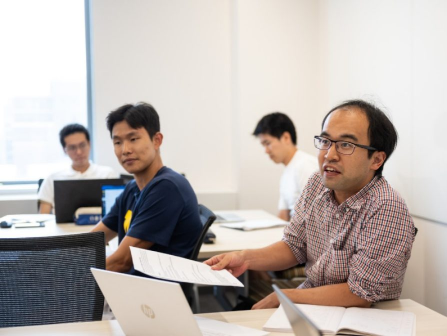

UMSI Tutoring
The Academic Success Team at UMSI is dedicated to supporting students inside and outside of the classroom. This site is dedicated to connecting students to tutoring and academic support resources. Resources covered on this site include:
- UMSI Peer Tutoring
- Additional Academic Support Resources
- Link to the Peer-to-Peer Tutor Directory
UMSI Programming Peer Tutoring Information Available for the below courses:
- SI 106 Programs, Information, and People
- SI 206 Data-Oriented Programming
- SI 506 Programming I
- SI 507 Intermediate Programming
- General Python support
Book Appointments with Programming Peer Tutors:
Akash Dewan
Hey! My name is Akash Dewan and I am a senior in the BSI program on the Information Analysis pathway with minors in Computer Science and Digital Studies. I have an extensive background working with Python and SQL and would love to help you out in any of the following classes: SI 106, SI 206/506, SI 305, and SI 330. I am looking to go into Data Analytics / Quantitative Research in the Media/Entertainment Industry so if that is something that aligns with you, please reach out! Outside of academics, I am an avid filmmaker, photographer, and music lover so feel free to hit me with any questions about balancing school with art / ways to get involved artistically on campus! Or if you just wanna yap about existential topics...~
Book an appointment with Akash: https://calendar.app.google/TVRiHqdSa4ZhtaXB9
Prem Ganesan
Hey there! I'm diving into the world of health informatics as a first-year master's student, armed with a computer science master's degree. My playground includes data analysis, machine learning, and AI, all in the fascinating realm of healthcare. Python has been my coding buddy for a solid 3 years now. Beyond the books, I'm a soccer enthusiast, juggling the ball professionally. Let's make this tutoring journey a blast—connecting the tech dots with a sprinkle of fun!
Book an appointment with Akash: https://calendar.app.google/ChXUkFSe5jXfq75j7
English Language Institute
English Language Institute
ELI exclusively serves members of the University of Michigan community with English for Academic Purposes courses and resources, GSI preparation, and TESOL courses that prepare students to teach English as a second or foreign language.
Here is the English Language Institute Website